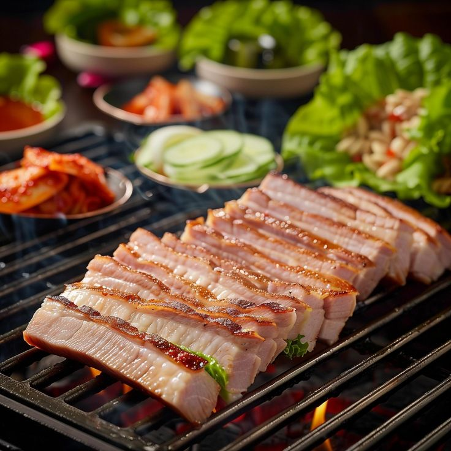

Samgyeopsal Casero

"Más que un plato, es una experiencia social. El samgyeopsal es sinónimo de compartir, cocinar y disfrutar en comunidad"
El samgyeopsal (삼겹살) es un plato coreano muy popular que consiste en tiras de panceta de cerdo sin curar, generalmente cortadas en trozos rectangulares delgados. El término «samgyeopsal» se traduce literalmente como «tres capas de carne», refiriéndose a las capas de carne y grasa que componen este corte de cerdo.
¿Qué es el Samgyeopsal?
El samgyeopsal se sirve tradicionalmente en una parrilla de mesa, junto con una variedad de acompañamientos. Algunos de los acompañamientos comunes incluyen hojas de lechuga fresca, rodajas de ajo crudo, cebollas en rodajas, pasta de chile (ssamjang), pasta de soja (doenjang), encurtidos (kimchi) y otros banchan (pequeños platillos de acompañamiento). Además, se proporciona arroz cocido y otros condimentos según la preferencia del comensal.
Para disfrutar de este plato, se coloca un trozo de panceta de cerdo en la parrilla caliente y se cocina hasta que esté dorado y crujiente por fuera y tierno por dentro. Luego, se retira de la parrilla y se coloca sobre una hoja de lechuga, junto con los acompañamientos deseados y un poco de salsa de chile o de soja. Se envuelve todo junto y se come en un solo bocado.
El samgyeopsal es una experiencia social en Corea, ya que se suele disfrutar en compañía de amigos o familiares. Es un plato informal pero muy apreciado, y las parrillas de mesa donde se cocina el samgyeopsal son un lugar común para reuniones sociales y celebraciones en el país asiático. Es una comida que fomenta la interacción y la camaradería entre las personas que lo disfrutan juntas.
Ingredientes 📝
- • 500 gramos de panceta de cerdo en tiras delgadas
- • Hojas de lechuga fresca lavadas y secas
- • Rodajas finas de ajo crudo
- • Rodajas de cebolla
- • Salsa de chile coreana
- • Salsa de soja (para marinar)
- • Aceite de sesamo
- • Sal y pimienta al gusto
- • Banchan (acompañamientos) como Kimchi, encurtidos, etc
- • Arroz cocido
👩🍳 Paso a paso
- Marinar la carne: Coloca las tiras de panceta de cerdo en un tazón y marínalas con un poco de salsa de soja, aceite de sésamo, sal y pimienta al gusto. Deja marinar durante al menos 30 minutos para que la carne absorba los sabores.
- Preparar los acompañamientos: Corta la cebolla en rodajas finas y prepara las hojas de lechuga y el ajo crudo en rodajas.
- Preparar la parrilla: Si tienes una parrilla de mesa, úsala siguiendo las instrucciones del fabricante. Si no, puedes usar una sartén o una parrilla convencional. Calienta la parrilla a fuego medio-alto.
- Cocinar la carne: Cuando la parrilla esté caliente, coloca las tiras de panceta de cerdo y cocínalas hasta que estén doradas y crujientes por fuera, y tiernas por dentro. Esto debería tomar alrededor de 2-3 minutos por cada lado.
- Servir: Coloca las tiras de panceta de cerdo cocidas en un plato junto con las hojas de lechuga y los acompañamientos preparados. Sirve con salsa de chile coreana y salsa de soja para mojar.
- ¡Disfruta! Para comer, toma una hoja de lechuga, coloca una tira de panceta de cerdo cocida, agrega un poco de cebolla y ajo, y unta con un poco de salsa de chile coreana si deseas un toque picante. Envuelve todo junto y disfruta en un solo bocado. Acompaña con arroz cocido y otros banchan si lo deseas.